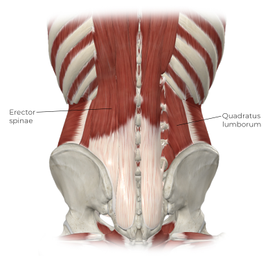
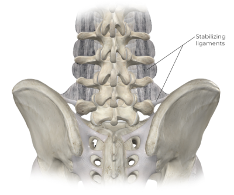
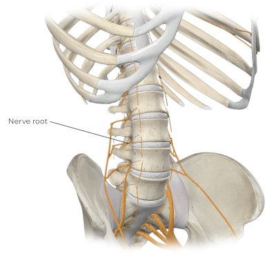
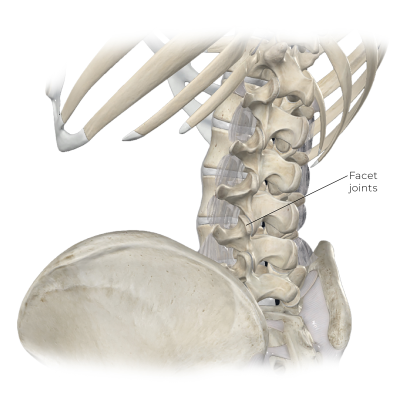
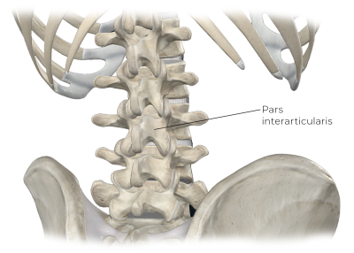

Worldwide, low-back pain affects 60-70 percent of people at some point in their lives. The economic
impact of these
conditions is staggering. Recent research shows worldwide yearly costs to treat low-back pain to be
around $26 billion;
126 million of these cases are due to work-related ergonomics.¹ The prevalence of these painful
conditions underscores
the urgent need for effective prevention and treatment strategies.
Despite the extreme frequency of low-back pain, there are countless cases in which health-care
practitioners are unable
to identify the causes. Failure to recognize or correctly diagnose the pain source makes treatment
unpredictable at best
and detrimental at worst.
Common Mechanical Factors Leading to Low-Back Pain
Acute-force trauma
Heavy lifting
High force loads
Improper mechanics
Prolonged sitting
Repetitive movements
Twisting movements
Other Contributing Factors
Age
Obesity
Physical condition
Psychological factors
Let's take a look at the onset of low-back pain, identify the most common conditions that cause it,
and outline key
assessment principles used for evaluation. While detailed evaluation protocols for each condition
are available, they
are beyond the scope of this article. Let's dive in.
Common Causes
Low-back pain is a common condition characterized by discomfort or pain in the lumbar region of the
spine. This area,
known as the lower back, encompasses the vertebrae, discs, nerves, and muscles extending from the
lower rib cage to the
pelvis. Low-back pain can be acute, lasting a few days to weeks, or chronic, persisting for three
months or longer. The
pain intensity varies widely, ranging from a constant, dull ache to sharp, movement-limiting
sensations.
Multiple factors contribute to low-back pain. Common mechanical causes include muscle hypertonicity
(likely
underdiagnosed), muscle strains, and ligament sprains. Dysfunctions of the structural elements of
the spine, the
vertebrae, joints, discs, and associated neural structures (spinal cord and nerve roots) also
contribute to pain in this
region.
Injuries from accidents or poor ergonomics and repetitive use frequently lead to low-back pain.
Additionally, conditions
like herniated discs, spinal stenosis, and osteoarthritis can trigger discomfort. Lifestyle factors
such as poor
posture, sedentary habits, and obesity increase the risk of developing this condition.
Back injuries typically result from a unique combination of factors. As massage therapists, we must
understand these
multifaceted causes to tailor our treatments effectively. When addressing low-back pain, we need to
consider not only
the immediate physical factors but also the broader context of our client's lifestyles and
activities. This
comprehensive approach allows us to provide more targeted and effective care, addressing both the
symptoms and the
underlying causes of low-back pain.
Primary Locomotor Tissues
Let's explore the role of biomechanical causes of low-back pain in more detail. Massage and other
soft-tissue treatments
have an integral role in treating most of these conditions.
Myofascial Pain
Muscular pain comes from two main factors: muscular dysfunction and muscle strains. Pain in the
myofascial (muscular and
fascial) tissues accounts for a large percentage of back pain complaints. The back muscles have
high demands of
stability and movement placed on them. Back pain results when muscles are overwhelmed either from
chronic overloading or
sudden high-intensity forces.
There are several ways that myofascial back pain can develop. It usually develops when muscles are
acutely or
chronically overloaded, and the body senses the potential for injury if the current demands
continue. A typical muscular
reaction to perceived overload is for the muscle to contract in a protective reaction (spasm). The
reaction often
exceeds what is needed for protection and creates continual overactivity, called hypertonicity, and
subsequent pain in
the muscle.
In some cases, localized areas of tightness, called myofascial trigger points, develop in the
muscle and can remain
tender locally or refer pain or other sensations. The common factor with these different aspects of
muscular pain is
excess activity in the neuromuscular system, leading to excess contraction and further pain.
Muscle strains are frequently cited as a cause of low-back pain, but this diagnosis is often
overused. Many cases
diagnosed as muscle strains don't match the symptomatic profile or onset consistent with the forces
necessary to
overstretch or tear a muscle (the definition of a strain). Muscle strains would be more likely in
the core stabilizing
muscles like the erector spinae or quadratus lumborum (Image 1). Muscle strains may undoubtedly
occur in the back, but
it's more likely that general muscular hypertonicity is underdiagnosed while muscle strains are
overdiagnosed.

Image 1. Erector spinae and quadratus lumborum are susceptible to strains. Image
courtesy of Complete Anatomy.
Chronic loading, especially in repetitive motion activities, is the main cause of tendon injuries.
These injuries, such
as tendinitis/tendinosis or tenosynovitis, are most common in tendons that span joints with a
significant range of
motion. Thus, they are common in the extremity's large power muscles that are exposed to high loads
and repetitive
motions.
Unlike limb tendons, however, spinal tendons seldom encounter the conditions that lead to overuse
tendon injuries. The
spinal muscles are used more for trunk stabilization and positioning and less to perform power
movements. Spinal tendons
are relatively short and small, with minimal range of motion at individual segments. These tendons
are rarely overloaded
to the extent that tendon injuries develop. Additionally, these tendons don't have synovial
sheaths, meaning they are
not susceptible to conditions like tenosynovitis that impact the tendon sheath.
Ligament Sprain
Ligament sprains, like muscle strains, are often overdiagnosed in cases of low-back pain. After
seeing a family
physician, clients may get a diagnosis of lumbar sprain/strain. This diagnosis is vague, indicating
either a muscle
strain, ligament sprain, or both without specifying the affected tissue. This lack of precision
makes determining the
most effective treatment approach difficult.
A true ligament sprain involves overstretching or tearing ligament fibers, which requires
substantial force. While you
may feel localized soft-tissue pain near ligaments, actual ligament damage is less common than
often assumed. The
spine's major ligaments, such as the anterior and posterior longitudinal ligaments, are large and
positioned close to
the vertebral bodies, making them resistant to sprains.
Smaller ligaments connecting transverse processes, spinous processes, and adjacent bones like the
pelvis are more
susceptible to sprains (Image 2). These smaller ligaments farther away from the body's center are
more likely to suffer
an actual sprain. However, pinpointing a specific sprained ligament in the spine remains
challenging due to the complex
anatomy and spinal mechanics.

Image 2. Ligaments that connect the spine to the pelvis. Image courtesy of Complete
Anatomy.
Structural Conditions
Now, let's review low-back pain that results from structural alteration. While massage plays a
primary role in
addressing muscle, tendon, and ligament issues, it serves more as an adjunct treatment for
structural and systemic
conditions.
Intervertebral Disc Herniation
Intervertebral disc herniation often comes to mind when discussing back pain. This condition occurs
when compressive
forces push the inner disc (nucleus pulposus) against the outer cartilage rim (annulus fibrosus).
Continued pressure
causes the annulus to protrude against nearby structures, mainly nerve roots (Image 3). This
pressure typically causes
radiating pain down the lower extremity along the affected nerve roots' sensory path rather than
back pain itself. A
disc herniation diagnosis as a cause of back pain is not as common as it used to be. MRI studies
have shown that disc
herniations don't always correlate with pain, leading to a more measured approach in diagnosis and
treatment.

Image 3. Posterior/lateral protrusion of the disc. Image courtesy of Complete
Anatomy.
Cauda equina syndrome, a serious type of disc protrusion, requires special attention. Unlike
typical disc herniations
that protrude posterolaterally, cauda equina syndrome involves straight posterior protrusion,
pressing on the spinal
cord fibers in the lower back (the cauda equina). Symptoms include bilateral lower extremity pain,
sensory and motor
disturbances in the pelvic floor region, and potential bowel, bladder, sexual dysfunction, or
sensory impairment. Refer
clients presenting these symptoms immediately to emergency care to prevent permanent neurological
damage.
Degenerate Disc Disease/Spinal Stenosis
Degenerative disc disease results from the intervertebral disc losing water content and flattening
under compressive
loads. As the discs flatten, the joints come closer together, decreasing the space where the nerve
roots exit the spine
(the intervertebral foramen). This condition is known as spinal stenosis and results in the discs
pressing on the nerve
roots and causing nerve pain. Vertebral contact can also lead to arthritic pain in the joints and
the development of
spinal tumors or bone spurs, decreasing the space further and leading to more nerve impingement.
Age-related changes to
the spinal structure often show up in detailed imaging studies.
Facet Joint Pathology
Facet (zygapophyseal) joints are the only direct articulation points between adjacent vertebrae.
These are standard
synovial joints with an articulating surface and a surrounding joint capsule. Like any joint, they
are susceptible to
degenerative changes like arthritis. Certain postures, like an exaggerated lumbar lordosis (Image
4), can increase
compression on these joints, potentially contributing to low-back pain.

Image 4. Facet joints further compressed in exaggerated lumbar lordosis. Image
courtesy of Complete Anatomy.
Spondylolysis and Spondylolisthesis
Spondylolysis and spondylolisthesis are two closely related conditions. Spondylolysis involves a
stress fracture in the
vertebra's pars interarticularis (Image 5), typically resulting from excessive compressive loading
during spine
extension. If severe enough, this can progress to spondylolisthesis, where the vertebral body
separates from the
posterior vertebral arch and slides (usually anteriorly) on the vertebra below. This condition most
commonly occurs at
the L5-S1 junction.

Image 5. Pars interarticularis. Image courtesy of Complete Anatomy.
Systemic Disorders/Inflammatory Conditions
Systemic inflammatory conditions are known to lead to back pain; two of the more common conditions
in this category are
ankylosing spondylitis and rheumatoid arthritis. Ankylosing spondylitis is a chronic inflammatory
disease that primarily
affects the spine and the sacroiliac joints, leading to pain and stiffness. Over time, this
condition can cause the
vertebrae to fuse, resulting in a rigid spine and a forward-stooped posture. The hallmark symptom
is lower-back pain
that improves with exercise but not with rest, often accompanied by morning stiffness that lasts
for an extended period.
Rheumatoid arthritis, on the other hand, is an autoimmune disorder that causes inflammation in the
joints, including
those in the spine. This condition leads to pain, swelling, and potential joint deformity. Unlike
ankylosing
spondylitis, rheumatoid arthritis can symmetrically affect multiple joints throughout the body and
is often associated
with systemic symptoms such as fatigue, fever, and weight loss.
Referred Pain
In some cases, back pain results not from local movement tissue disorders but from other organs or
systems that refer
pain to the back. Conditions such as kidney stones and pancreatitis can manifest as significant
discomfort in the lower
back, even though their primary pathology is elsewhere. For instance, kidney stones can cause
sharp, intense pain in the
lower back as they move through the urinary tract. Similarly, pancreatitis can lead to upper
abdominal pain that
radiates to the lower back. Symptoms of nausea, vomiting, and painful urination often accompany
both conditions.
When addressing low-back pain,
consider not only the
immediate physical factors but also the
broader context of our
client's lifestyles and activities. This comprehensive approach allows us to provide more targeted
and effective care,
addressing both the symptoms and the underlying causes of low-back pain.
Psychogenic Factors
Psychological factors such as depression, anxiety, or past trauma, rather than direct physical
tissue damage, can
influence the pain experience and is called psychogenic pain. This type of pain can
manifest in various forms, including
headaches, muscle aches, back pain, and abdominal pain, often without any apparent physical injury
or pathology. Despite
the lack of physical evidence, psychogenic pain is genuine and can significantly impact a person's
quality of life.
The exact mechanisms behind psychogenic pain are complex and involve the interplay between the
brain, emotions, and past
experiences. For example, stress or anxiety can amplify pain signals, making pain feel more intense
or widespread.
Similarly, past trauma or ongoing emotional distress can trigger or exacerbate pain symptoms.
Treatment for psychogenic
pain typically involves a multidisciplinary approach that includes psychotherapy, such as
cognitive-behavioral therapy,
physical therapy, and sometimes medications to address underlying mental health conditions. Massage
is a valuable
adjunct treatment in many cases of psychogenic pain.
Nonspecific Back Pain
Nonspecific low-back pain presents a unique challenge in diagnosis and treatment. This category
encompasses many
potential complaints and can involve issues of multiple types, not just locomotor tissues.
Practitioners often use this
label when they can't determine a specific cause, making it a catchall term for unexplained back
pain.
As a diagnostic term, nonspecific back pain sparks debate among experts. Renowned back researcher
Stuart McGill argues
that the diagnosis results from inadequate assessment, suggesting a more thorough evaluation would
reveal a specific
cause.² However, others maintain that nonspecific back pain is a legitimate classification,
particularly for cases of
nociplastic pain (that which does not seem to have a clear cause).
As massage therapists, we must approach nonspecific low-back pain with both skepticism and
open-mindedness. While a
thorough assessment may reveal a specific cause in many cases, we should also recognize that some
pain defies precise
classification. In these instances, focusing on symptom management and overall function improvement
may be more
beneficial than searching for a specific cause. Remember, what one practitioner deems nonspecific
might be identifiable
to another with different or more advanced assessment skills or perspectives.
Key Assessment Protocols
Determining the issues contributing to low-back pain is challenging, yet understanding your
client's condition is
crucial for effective treatment. Assessment helps rule out serious conditions and potential red
flags. While a complete
evaluation is beyond this article's scope, we'll cover highlights to consider during your
evaluation process.
A comprehensive assessment includes history, observation, palpation, range-of-motion and resistance
testing, and special
tests (abbreviated as HOPRS). Let's explore the essential factors in each section, focusing on
aspects most relevant to
massage therapists.
History
The history is the most critical part of any evaluation process. Detailed questioning about
symptoms, onset, aggravating
factors, and previous treatments provides invaluable information. To conduct an effective history,
you need in-depth
knowledge of various conditions.
Here are key points to listen for:
How the pain began is crucial—This information helps determine if the pain was
sudden or developed chronically. For
acute onset injuries, the client should describe the initiating movement or activity in detail.
Your kinesiology
knowledge will help you assess the likelihood of specific tissue injuries. Note the amount of
potential force in any
acute injury. Muscle injuries are more common and occur with less force, while ligament sprains
require significant
force. More than one tissue type may be involved in an acute injury.
Chronic pain points to different suspects—Identify if static postures
exaggerate the pain, as this can indicate specific
tissue involvement. For example, disc herniation pain often worsens with prolonged sitting due
to disc compression and
subsequent pressure on nerve roots. Facet joint irritation may increase with extended periods of
standing in an
exaggerated lumbar lordosis. Conditions like spondylolysis, stenosis, and degenerative disc
disease often worsen with
prolonged static loading. Conversely, ligament pain rarely results from chronic loading.
The nature of the pain sensation also provides crucial clues—Sharp, shooting,
or stabbing pain, especially if it
radiates down the lower extremity, suggests nerve root compression. Radiating pain is common in
conditions like disc
herniation, stenosis, degenerative disc disease, or spondylolisthesis. Shooting pain to the
lower extremity is not
typical of muscular or ligamentous injury, indicating neural irritation is more likely.
Taking a comprehensive history is an art that improves with practice. Learning more about various
conditions and how to
evaluate their etiology through your intake history will enhance your skills.
Observation
Observation can help identify visual clues that shed light on the client's complaint, though some
conditions lack
visible signs. Here are some key physical signs to look for:
Muscular hypertonicity can produce visual cues like a lateral pelvic tilt from a tight
quadratus lumborum.
Muscle strains might show swelling, redness, or bruising if the affected muscle is superficial.
Ligament injuries are usually too deep for visible signs, but if severe, they can show similar
effects as those with
strains.
Watch your client's movements during the evaluation process. Movement apprehension often indicates
pain avoidance. The
pattern of these movements can provide essential clues about involved structures. For instance,
clients with
spondylolisthesis or facet joint irritation typically avoid extension movements because these
aggravate symptoms.
Palpation
Palpation is the stronghold of massage therapists, who spend more time palpating soft tissues than
almost anyone else in
the health-care system. When you combine this skill with anatomical knowledge, you can not only
target specific tissues
but also gain insights throughout the treatment session.
Muscle dysfunctions like strains or hypertonicity are commonly identified through palpation. Your
anatomy knowledge is
essential for determining specific muscles or ligaments involved in strains or sprains. Tenderness
and pain reproduction
are primary indicators during palpation. Palpation with moderate pressure may also reveal reactive
muscle splinting
(reactive contractions). Even very gentle palpation can help detect a lack of mobility in
superficial fascial tissues,
which indicates deeper muscle issues. Some deep structural spinal problems, such as disc
herniations and stenosis,
cannot be palpated due to their depth. With severe spondylolisthesis, you might feel a bit of the
vertebral
displacement.
Range-of-Motion and Resistance Testing
Range-of-motion (ROM) and resistance testing involve three evaluation movements at each joint:
active range of motion
(AROM), passive range of motion (PROM), and manual resistive tests (MRT). Specific tissue
pathologies often produce
characteristic and predictable patterns in these tests. For example, a quadratus lumborum strain
typically causes pain
during active contraction (concentrically or eccentrically), passive stretching, and a resisted
contraction (lateral
lumbar flexion on the affected side).
The spine presents unique challenges for motion and resistance tests compared to the extremities.
For instance, testing
passive elbow flexion is easy by just moving the client's forearm while they relax. Conversely,
passive torso flexion
requires getting the client to fully relax while you move their torso, which is quite tricky.
Alternative positions can
help you achieve these passive movements.
Special Tests
Special tests are specialized evaluation procedures designed to indicate the likely presence or
absence of specific
conditions. While numerous spinal special tests exist, recent research has questioned the accuracy
of many of these. The
tests are less commonly used for muscular hypertonicity, strains, or ligament sprains and more
often for structural
conditions like neural involvement from disc herniation or stenosis. Tests like the straight leg
raise or slump test may
provide helpful information about potential nerve involvement in back pain.
Special tests should only be used in conjunction with a comprehensive assessment and not as a
shortcut in the evaluation
process. In light of recent research on their validity, I now place greater emphasis on information
from other aspects
of the HOPRS assessment process. Developing your assessment skills will significantly enhance your
treatment success and
clinical decision-making.
Conclusion
Understanding how and why low-back pain occurs and its various causes is at the heart of finding an
effective treatment
plan. This knowledge allows us to choose the best treatment approaches and techniques that match
the physiological and
pain presentation of the client's condition.
Treatments for low-back pain are as diverse as the myriad types of pain they address. Treating
these conditions runs the
gamut from soft-tissue manipulation to corrective surgery. However, soft-tissue therapies continue
to be effective
treatments for acute and chronic low-back pain. They can even be helpful when the cause is unknown.
Massage therapy, in particular, offers a unique approach to acute and chronic low-back pain. The
massage therapist's
ability to specifically palpate tissue and target key problem areas with hands-on treatment is
incredibly therapeutic.
The extensive time spent with clients also allows massage therapists to apply more comprehensive
treatment.
Additionally, the relaxing environment maximizes the effects of descending modulation in the
healing process.
Notes
1. Ningjing Chen, Daniel Y. T. Fong, and Janet Y. H. Wong, “The Global Health
and Economic
Impact of Low-Back Pain Attributable to Occupational Ergonomic Factors in the Working-Age
Population by Age, Sex,
Geography in 2019,” Scandinavian Journal of Work, Environment, and
Health 49, no. 7
(August 2023): 487-95, https://pubmed.ncbi.nlm.nih.gov/37634250.
2. Stuart McGill, Low Back Disorders: Evidence-Based Prevention and
Rehabilitation, 3rd ed. (Human Kinetics, 2015).
Fatoye, F., T. Gebrye, and I. Odeyemi. “Real-World Incidence and Prevalence
of Low Back Pain
Using Routinely Collected Data.” Rheumatology International 39,
no. 4 (April 2019):
619-26. https://pubmed.ncbi.nlm.nih.gov/30848349.
Jenkins, H. J. et al. “The Available Evidence on the Effectiveness of 10 Common Approaches to
the Management of Non-Specific Low Back Pain: An Evidence Map.” European Journal of
Pain 26, no. 7 (August 2022): 1399-411. https://onlinelibrary.wiley.com/doi/full/10.1002/ejp.1974.
Lyu, F-J. et al. “Painful Intervertebral Disc Degeneration and
Inflammation: From Laboratory
Evidence to Clinical Interventions.” Bone Research 9, no. 7
(2021). www.nature.com/articles/s41413-020-00125-x#citeas.
Swain, C. et al. “No Consensus on Causality of Spine Postures or Physical Exposure and Low Back
Pain: A Systematic Review of Systematic Reviews.” Journal of Biomechanics 102 (March
2020): 109312. https://pubmed.ncbi.nlm.nih.gov/31451200.
Vingin, R. et al. “Current Evidence for Diagnosis of Common Conditions Causing Low Back Pain:
Systematic Review and Standardized Terminology Recommendations.” Journal of Manipulative and
Physiologcal Therapeutics 42, no. 9 (November 2019): 651-64. https://pubmed.ncbi.nlm.nih.gov/31870637.
By analyzing movement, you can
determine where to focus your
myofascial release on the held areas or
your proprioceptive awareness work
on the “forgotten” areas.
GLP-1 RAs are effective and relatively low-risk interventions to manage diabetes and
weight. However, we have no
information about how massage therapy fits with them.
Trigger points, hypertonicity, strains, sprains, and a host of other complaints are all
common causes of low-back pain.
In this column, we'll look at cluneal nerve entrapment.